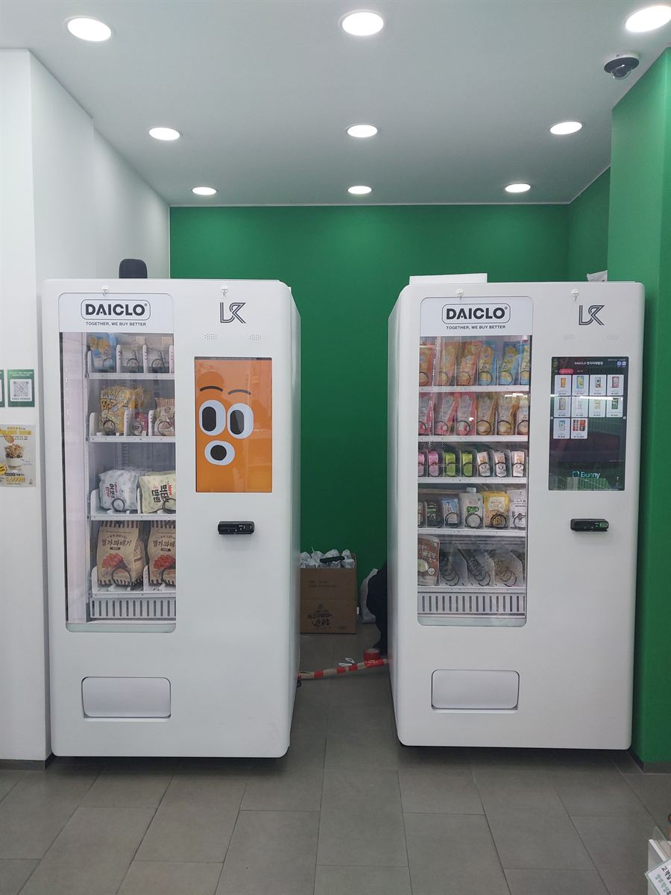

하남 무인자판기 설치 완료 — 아파트 상가 무인매장 간편식·간식 자판기 2대

자판기를 들이기로 했을 때 거의 모든 사장님이 처음 묻는 것이 "큰 거 한 대가 나아요, 작은 거 두 대가 나아요?"입니다. 사진은 두 대로 나눈 쪽을 고른 현장입니다. 상가 안쪽 벽을 따라 같은 크기의 기계를 나란히 세우고, 왼쪽은 봉지 과자·간식, 오른쪽은 간편식과 냉장 상품으로 역할을 갈랐습니다. 한 대짜리 큰 기계보다 칸 수는 비슷한데, 운영은 훨씬 단순해집니다.
어떻게 구성했나
두 대로 나눈 이유는 채우는 주기가 다르기 때문입니다. 과자·라면·봉지 간식은 유통기한이 길어 한 번 채우면 한참 갑니다. 반면 간편식과 냉장 상품은 회전이 빨라서 자주 들여다봐야 합니다. 이걸 한 기계에 섞어 놓으면 빨리 빠지는 칸 몇 개 때문에 기계 전체를 계속 열게 됩니다. 나눠 놓으면 오른쪽만 자주 보면 되고, 왼쪽은 비는 칸이 생길 때만 열면 됩니다. 사장님이 매장에 머무는 시간이 눈에 띄게 줄어듭니다.
자리도 한 대보다 두 대가 잡기 쉬웠습니다. 상가 점포는 폭은 좁고 길이는 긴 경우가 많아, 넓은 기계 한 대를 들이려면 통로가 막히거나 출입문 동선과 부딪힙니다. 사진처럼 같은 폭의 기계 두 대를 벽을 따라 세우면 가운데 통로가 그대로 남아 두 사람이 동시에 골라도 서로 비키지 않아도 됩니다. 기계 사이는 한 뼘 이상 띄웠는데, 보기 좋으라고가 아니라 옆면 방열구를 막지 않기 위해서입니다. 벽에 바짝 붙이면 냉장 장치가 더 오래 돌고 전기요금이 올라갑니다.
앱으로 원격 관리, 설치는 반나절
기계가 두 대여도 보는 화면은 하나입니다. 두 대의 칸별 남은 수량이 한 앱 안에 같이 뜹니다. 어느 칸이 비었는지, 어제 무엇이 몇 개 나갔는지를 집에서 확인하고 채울 물건만 챙겨 나오면 됩니다. 처음 한 달은 숫자가 쌓이는 걸 보면서 안 나가는 품목을 잘 나가는 품목으로 갈아 끼우는 시기인데, 이때 앱 기록이 있고 없고가 차이가 큽니다. 감으로 바꾸면 또 안 나가는 걸 넣게 됩니다.
결제는 카드와 간편결제 전용으로 맞췄습니다. 무인으로 돌리는 매장에 현금을 받게 해 두면 잔돈 관리와 현금 수거가 따라붙어 무인인 의미가 줄어듭니다. 설치에 필요한 건 기계 폭만큼의 벽면과 220V 콘센트입니다. 두 대라고 작업이 두 배 걸리지는 않습니다. 배송·수평 조정·상품 적재·시험 결제까지 묶어서 반나절이면 그날 바로 장사를 시작하실 수 있습니다.
구매·임대·렌탈 모두 가능
두 대를 한꺼번에 들이는 게 부담이면 한 대로 먼저 시작하는 방법도 있습니다. 회전이 빠른 쪽을 먼저 놓고 한두 달 숫자를 본 다음, 품목을 늘릴 여지가 보일 때 옆에 한 대를 더 붙이는 순서입니다. 반대로 들어올 사람이 이미 정해져 있는 자리라면 처음부터 두 대를 채워 놓는 쪽이 매출이 빨리 자리를 잡습니다. 구매·임대·렌탈 모두 가능하고 중간에 방식을 바꾸실 수도 있습니다. 어느 쪽이든 설치비는 무료이고 세금계산서도 발행됩니다.
하남 무인자판기 상담은 무료
아파트 단지가 촘촘한 미사동·풍산동·덕풍동, 구도심 상권인 신장동·창우동, 신도시 쪽 위례동·감일동까지 하남 전역에 방문합니다. 하남은 단지 안 상가와 길가 상가가 나란히 있는 동네가 많아, 같은 업종이라도 입구가 단지 쪽을 보느냐 도로 쪽을 보느냐에 따라 팔리는 품목이 달라집니다. 상가 안 무인매장뿐 아니라 사무실 건물 로비, 학원 휴게 공간, 헬스장·스터디카페, 공장·물류창고 휴게실처럼 사람은 머무는데 파는 사람이 없는 자리면 한 대로 시작할 수 있습니다. 자리 사진과 콘센트 위치만 알려 주시면 되는 자리인지 먼저 봐 드리고, 상담과 견적은 무료입니다.
관련 검색어: 하남무인자판기 · 하남무인자판기설치 · 하남무인매장 · 하남자판기임대 · 미사동무인자판기
※ 사진은 H포스가 시공한 설치 사례이며, 글에 적힌 지역의 현장 사진은 아닙니다.
📞 하남 무인자판기 설치 상담 010-6832-1994